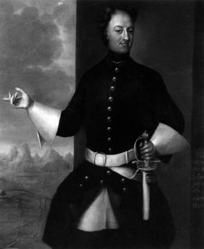

Petro’nun bu hizmetleri Rusya’yı ihya etmişti. Hatta Rus yazarlarından Pagodin Petro’dan bahsederken “Petro Rus tarihinin kendi başına yegâne cevheridir. Petro hakkında birçok eser yazılmış, fakat hiç birinde derin araştırma ve inceleme yapılmamıştır. İlim ve inceleme Petro hakkında henüz o derecede araştırmada bulunmamıştır.” tarzında görüşler beyan ettiği gibi Rusya’nın hassas (lirik) ve ateşli şairi Puşkin’de, Petro’nun Neva Nehri’ne doğru ilerleyen büyük bir kaya parçası üzerindeki ata binmiş şekilde olan heykeline hitaben yazdığı bir manzumede “kâh âlim, kâh kahraman, kâh amele, kâh gemici... Hâsılı bütün çalışılması gereken yollarda, yerlerde çalışmayı tamamlayarak ikbal tahtının üzerine bütün ruh ve bedeninle bir işçi gibi çalıştın!” diyordu.
Büyük Petro Rusya’nın içişleri durumunu düzelttikten sonra ülkenin hariciye emniyetini de temin etmek, Rusları zafer ve galibiyet cazibesiyle de çekmek istiyordu. Petro bu hedefe ulaşmak için Osmanlılara karşı bir Azak (Azof) Seferi açmış, fakat dâhili durumların bozuk ve perişan olmasına rağmen irsi özelliklerini koruyan Osmanlı askerlerine karşı hiçbir başarı kazanamamıştı. Petro, genç imparatorluğun ilk silahlı tecrübesi olan bu muharebede bütün cesaretini gösteriyor, kendini tehlikelere atıyordu. Hatta sevgili kız kardeşi Natalya, Petro’ya sık sık yolladığı mektuplarda, öyle hayatını tehlikeye atmamasını yazıyor, Petro bu mektuplara verdiği cevaplarda “Kardeşim! Ricalarını tutuyor, top güllelerine karşı hiç gitmiyorum, fakat onlar bana doğru geliyorlar. Asıl sen onlara emret de böyle yapmasınlar!” tarzında latife ediyordu.
Petro Osmanlılara karşı aldığı bu başarısızlığı bir türlü hazmedememiş, bir sene sonra geceli gündüzlü çalışmış, Azak Kalesi’ni tam bir zaferle almaya muvaffak olmuştu. Petro’nun bu başarısı genç imparatorluk için teşvik tesellisi yerine geçmiş, artık Petro’nun ikbal yıldızı olanca şaşaasıyla doğmaya başlamıştı. Petro bu zaferinden sonra parlak bir alayla Moskova’ya girmiş, gelecekteki icraatlarına yeni yeni zeminler hazırlamaya başlamıştı. Hatta güneyde bu başarıyı elde ettikten sonra kuzeyde Baltık sahillerini de elde etmeyi planlamıştı. Fakat bunun için de evvela Osmanlılar tarafından vuku bulacak saldırılara mani olmak, güney hududunu kati surette emin bir hale koymak lazımdı. Petro, Batı Avrupa’dan hiçbir yardım alamayacağını, Rusya’nın kendi kuvvetinden başka hiç bir kuvvete dayanamayacağını, güvenemeyeceğini anlamıştı. Bu maksadın gerçekleşmesi de ancak hükümetin ıslahatı ve silah gücünün artırılması sayesinde mümkün olabilecekti. Bunun için Vuruneş Tersanelerinin faaliyetlerini artırmalarını emretmiş, hatta sonbaharda 1698 bu tersaneleri bizzat ziyaret ederek yokluğunda kızaklara çekilen gemileri teftişten geçirmişti.
Petro Karlofça anlaşmasında hazır bulunan murahhas Vozeni Ceyni’den Osmanlı ülkesinin durumu hakkında bilgi almış, Osmanlılar tarafından muhtemel hiçbir taarruz meydana gelmeyeceği konusuna kani olmuştu. Hatta daha ziyade, emniyet peyda etmek ve Osmanlılarla doğrudan doğruya müzakerelerde bulunmak için Okramçev’i İstanbul’a göndermişti. Fakat Petro, Rusya’nın icabında hiçbir şeyden korkmadığını Osmanlılara göstermek için donanmasını da Karadeniz’e gönderecek, Okrançev, bindiği harp gemisi ile sarayın surları önünde demir atacaktı.
Okrançev “Kale” adındaki gemisiyle hareket etmiş, İstanbul önlerine geldiği zaman kırk top atarak Sarayönü’ne demirlemeye başlamıştı. Osmanlılar, Rus harp gemilerini görür görmez gemileri ziyaret etmişler, nereden geldiklerini ve nereye gittiklerini sormuşlardı. Bu durum II. Mustafa’yı da endişe içinde bırakmış, yanına aldığı erkân ve vezirler ile gemiyi ziyarete gelmiş, her tarafını dolaşmış, geminin yapım tarzını takdir ederek çarın daha böyle birçok gemilerinin bulunup bulunmadığını sormuştu. Fakat bir müddet sonra İstanbul’da heyecan uyandıran haber ortaya çıkmıştı.
Birçok kimseler Petro’nun büyük bir donanma ile Anadolu sahillerine çıktığını Osmanlı ülkesine taarruz fikrinde olduğunu söylüyorlardı. Hatta o akşam Rus gemilerinde verilen ziyafette sevinç gösterisi için toplar atılmış, bu alışılmamış top sesleri esası olmayan şayiaları bir kat daha kuvvetlendirmişti. Fakat bir müddet sonra bu rivayetlerin aslı ve esası olmadığı anlaşılınca herkeste bir emniyet, bir itimat hâsıl olmaya başlamıştı.
Ruslar Teşrinisanide (Kasım ayında) müzakerelere başlamışlardı. Bu müzakereler pek çok zaman devam ediyor ve bir türlü kati bir karar verilemiyordu. Rusların şartları Osmanlıların menfaatlerine tamamen aykırıydı. Rusların Azak Kalesi ve Dinyeper Nehri civarındaki kalelerin kesin şekilde terkini, Kırım Hanı’na verilen verginin kaldırılmasını, Kamame Kilisesi’ne gelen Ruslara kolaylık gösterilmesini, Karadeniz’de gemilerinin serbestçe dolaşmasını istiyorlardı. Fakat Osmanlılar bilhassa son maddeyi asla kabul edemiyorlardı. Bu son madde Osmanlı haklarına tamamen aykırıydı. Osmanlı delegesi bu şartı asla kabul edemiyor: “Gerek Karadeniz ve gerek bütün Karadeniz sahilleri zat-ı şahanenin hâkimiyeti altındadır. Osmanlılar buralara hâkim oldukça bu sularda hiçbir gemi görünemez. Ve buralarda zat-ı şahane padişahtan başka kimse hâkim olamaz. Hatta bundan önce Fransızlar, İngilizler, Hollandalılar ve Venedikliler Karadeniz’e ticaret gemileri göndermek için talepte bulunmuşlar. Babıâli bunlara da aynı cevabı vermişti: “Karadeniz, Babıâli’nin gözünde saf ve lekesiz bir bakir değerindedir. Ona hiç kimsenin eli sürülemez. Osmanlı mülkleri altüst olmadıkça Karadeniz’de de hiçbir ecnebi gemisi görünemez” diyordu[14] müzakereler gittikçe uzuyordu. Nihayet müzakerelerin daha çok uzamasına meydan vermemek için bu tekliften vazgeçilmiş. 3 Temmuz 1700’de görüşmeler sona ermişti.
İmzalanan karşılıklı anlaşma gereğince Azak Kalesi Rusya’da kalacak, Dinyeper Kaleleri Osmanlı Hükümetine verilecek, Kırım Hanı’na vergi verilmeyecek, Rusya ile Kırım Hanlığı arasında tarafsız bir bölge bırakılacak, Rus ziyaretçilerin Kumame’yi[15] ziyaret etmelerine engel olunmayacaktı.
Osmanlılar bu sulh anlaşmasında Ruslara pek çok taviz vermişlerdi. Bu tarihten itibaren Rusya Azak Denizi sahiline tamamiyle yerleşmiş, kendisine güneyden gelebilecek saldırılara karşı 30 sene teminat almış, bütün gücüyle kuzey fütuhatına devam etmeye karar vermişti.
Petro’nun kuzeyde takip ettiği strateji Baltık Denizi sahiline tamamiyle yerleşmekti. O sırada Danimarka Kralı 4. Frederik 1699 - 1730 vaktiyle İsveç Krallarına kaptırdığı yerleri geri almak istiyor. Holştayn Kontluğunu Danimarka’ya bağlamayı arzu ediyordu. Polonya Kralı ve Saksonya Prensi 2. Ogust Nalkıran da Liyoland’ı elde etmeğe çalışıyordu. Şimdi bu üç hükümdar aynı gayeyi takip ederek bütün bu başarıları İsveç’in zararına kazanmak fikrinde bulunuyorlardı. Büyük Petro kendi maksadını temin için Polonya Kralı 2. Ogust ile ittifak yapmıştı.
İstanbul’da sulh anlaşması sona erinceye kadar hiç sesini çıkarmamış, gizli gizli tedarikle seferi hazırlıklarda bulunmuştu. Fakat bu esnada Danimarka Kralının harbe girişmesi, İsveç Kralı 12. Şarl’ı[16] birdenbire galeyana getirmiş. İsveç ordusu Kopenhag önünde karaya çıkarak Danimarka Kralını sulh anlaşmasına mecbur etmişti. (18 Ağustos 1700) Bu sulh anlaşması gereğince Holştayn kuvvetini, hukuk ve arazisini geri alacak Danimarka ile Polonya arasında yapılan bu anlaşma feshedilmiş sayılacaktı.

12. Şarl